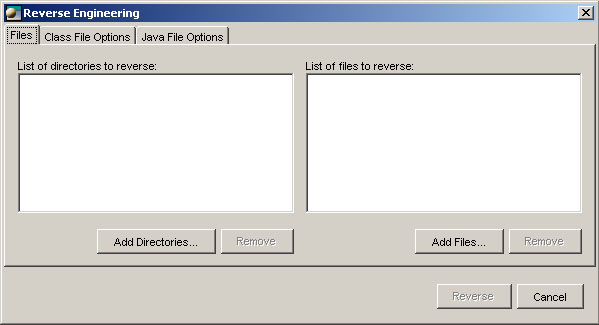

Reverse engineering Java/XMI
There are many possible types of file in the reverse engineering process:
- Java source files (.java)
- Java class files (.class)
- Java archives (.jar)
- Java compressed files (.zip)
- Web application archives files (.war).
- XMI files (XML Metadata Interchange) (.xmi .xml).
Instructions
To perform a reverse engineering:
-
In the explorer, select the project where you want to generate the reversed model.
-
Choose Tools > Java/XMI > Java/XMI Reverse Engineering.
The reverse engineering interface window will appear.

-
This window lets you add the files that you plan to reverse. You can also select some directory containing a batch of files to reverse.
Click on the corresponding buttons and choose all the files that you plan to reverse.
-
Click on the Reverse Engineering button to start the reverse operation.
A message will appear at the end of the process letting you the opportunity to consult a report about the operation.
The reversed model will appear in the explorer window.
Diagrams et graphical representations
The new model doesn't have diagrams by default.
You have to add them under the class model or under the desired packages.
Right-click on the class model or a package icon and choose Add > Diagram in the pop-up menu.
A diagram will be added. To see this diagram, double-click on its icon in the explorer window.
An empty diagram window will appear.
To generate the graphical representations of the objects, right-click in the diagram background and choose Add Missing Diagram Objects in the pop-up menu.
Now, for a better layout of the objects,
right-click in the diagram background and choose Layout Entire Diagram in the pop-up menu.
Result
After the reverse engineering process, you will obtain this:
- {Unresolved}: import is made on a package (*) and the class name is not
prefixed.
- Application classes: packages, classes and compilation units from the
selected Java files or those in the directories.
- External references: all the packages and classes referred to in the selected
reversed classes.